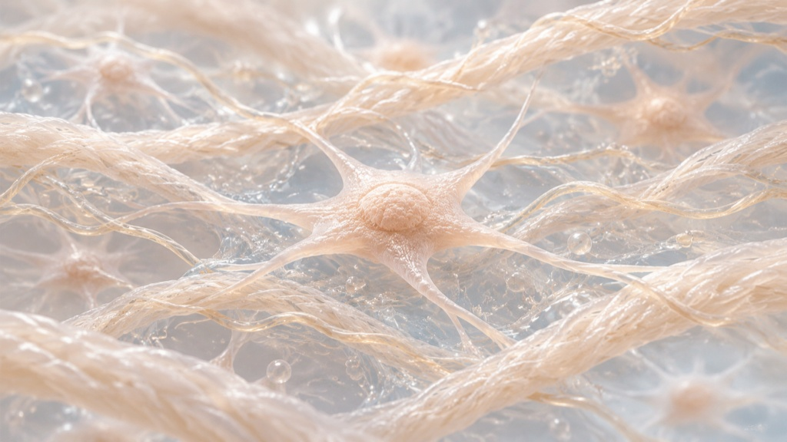

Анатомия кожи в иллюстрациях
Трёхмерные анатомические схемы базовой серии: послойное строение кожи, работа фибробластов во внеклеточном матриксе, ремоделирование коллагена и архитектура сосудистых сетей.
К материалам серии ↗



Трёхмерные анатомические схемы базовой серии: послойное строение кожи, работа фибробластов во внеклеточном матриксе, ремоделирование коллагена и архитектура сосудистых сетей.
К материалам серии ↗